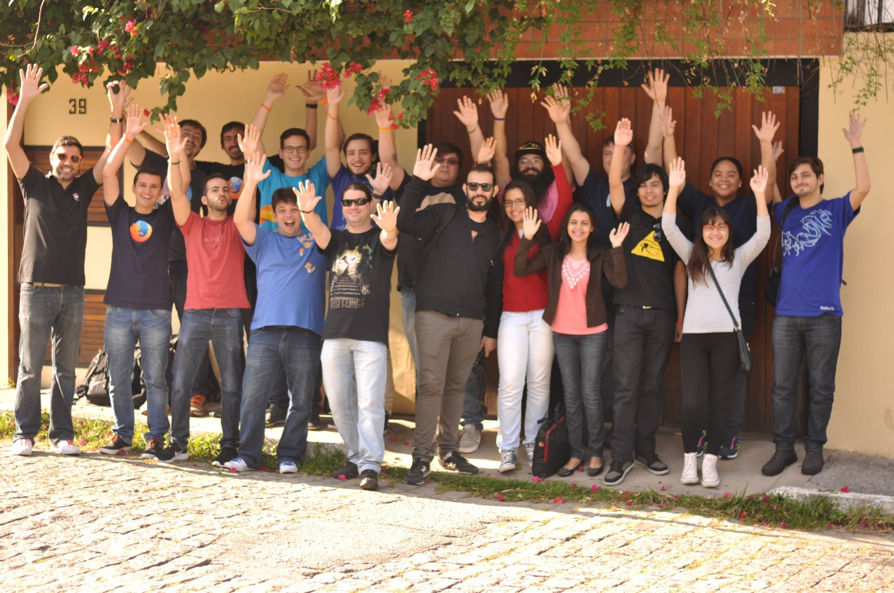

Adicione Super Poderes ao
seu Firefox
Apresentação criada pela Comunidade Mozilla Brasil
Quem somos?
Eduardo Barros
Mozillian
CTO e Co-fundador da Elbit Digital
Tenho um caso de amor com HTML + CSS + JS
Entusiasta de Software Livre
João Paulo Polles
Técnico em Informática, Acadêmico em Tecnologia em Análise e Desenvolvimento de Sistemas na UNIVEL, Desenvolvedor Web Há mais de 5 anos, Entusiasta do Software e Hardware Livre. Atualmente é voluntário na Mozilla e na TvCvel e bolsista desenvolvedor em um projeto na Fundetec em Cascavel/PR.
E fazemos parte da
Você conhece a mozilla?
Somos orgulhosamente
SEM FINS
LUCRATIVOS!
Assim, somos livres para inovar em seu nome sem a pressão de compromisso com investidores ou organizações.
Firefox
Estatísticas
 Chrome
Chrome62%
 Firefox
Firefox16%
 IE & Edge
IE & Edge12%
 Safari
Safari5%
 Opera
Opera2%
Internet para as pessoas, sem lucro.
O que está por vir
Firefox 50
- Suporte a pesquisa de palavras inteiras no "Localizar na Página", vulgo Ctrl+F.
- Opção de configuração do Ctrl+Tab para alterar entre as abas recentemente utilizada.
- Melhorias na impressão no modo leitura.
- O Firefox irá mostrar um icone de um cadeado tachado caso a página possua campos de senhas inseguros.
- Emoji para todos! O Firefox irá usar Emojis embutidos ao navegador em navegadores sem fontes de Emoji nativos(Linux e Windows 8 e suas versões anteriores)
Versões

Firefox 49

Firefox Beta 50

Firefox Developer Edition 51

Firefox Aurora 51

Firefox Nightly 52
Complementos
Uma forma de adicionar novas funcionalidades no Firefox.
Algumas indicações de
Complementos...
- AdBlock Plus
- Lightbeam
- FireFTP
- PixelZoomer
- Empty Cache Button
- RescueTime
Nas versões Beta, Developer Edition/Aurora e Nightly são desenvolvidas e testadas novas funcionalidades que um dia estarão na versão estável do navegador.
Existem experimentos que podem trazer muito ao navegador e precisam de sua ajuda para o desenvolvimento e decisão se irão implementar no firefox/desenvolver um complemento.
Firefox Test Pilot
O que é?
- Teste de Possíveis Novas Funcionalidades
- Essas funcionalidades podem ou não serem implementadas no Firefox
- Por isso que sua opinião é importante!
Vamos aos projetos!

Capture sua tela!
Capture sua tela ou parte dela com uma ferramenta intuitiva e simples.

Assista a vídeos em qualquer página!
Assista a vídeos do YouTube e Vímeo em qualquer página que você estiver.
Proteção contra rastreamento
A proteção que estava presente no modo de navegação privado agora em todas as páginas.

Uma nova página inicial
Uma página inicial reimaginada com seu histórico de acesso, deixando uma forma fácil de encontrar exatamente o que você procura.

Uma nova forma de organização das abas
Que tal trazer as abas do topo para a lateral esquerda da tela?

Página não encontrada?
Caso uma página não encontrada possua, veja uma versão salva da página em questão pelo Wayback Machine(web.archive.org).

Chegue ao melhor da web mais rápido!
Comece a digitar em sua Awesome bar e os lugares mais populares, pessoas, e artigos da wikipédia aparecerão para uma melhor navegação.
Vamos conhecer um pouco mais sobre esses projetos?
LET'S GO!
OOOPA! Ainda não acabou!
Temos um quiz!
Pergunta 0
Qual é o animal que é mascote do principal navegador da mozilla?
Resposta: Panda Vermelho
Pergunta 1
Cite 3 dos projetos que compõem o Firefox Test Pilot.
Page Shot, Min Vid, Tracking Protection, Activity Stream, Tab Center, No More 404s e Universal Search.
Pergunta 2
Um dos projetos muda a forma de visualização da lista de abas. Qual o nome dele?
Resposta: Tab Center.
Pergunta 3
Uma função que está só presente na Navegação Privativa pode estar presente na navegação normal com esse projeto. Qual o nome dele?
Resposta: Tracking Protection.
Pergunta 4
Uma nova página inicial é apresentada com esse projeto. Qual o nome dele?
Resposta: Activity Stream.
Envolva-se!
 www.mozillabrasil.org.brOBRIGADUUU!
Alguns Links
Mozilla - www.mozilla.org
Mozilla Brasil - www.mozillabrasil.org.br
Reveal.JS - github.com/hakimel/reveal.js
Esta apresentação: mozillabrasil.github.io/latinoware-test-pilot/